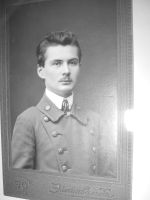

Страницы авторов "Тёмного леса"
Литературный Кисловодск и окрестности
Пишите нам! temnyjles@narod.ru
Это главы из книги моей мамы "Наша история", посвященные Вадиму Васильевичу Смушкову (1894-1937) (первому мужу моей бабушки Марии Аркадьевны), а также его жене Анне Абрамовне (1906-1992) и сыну Игорю Вадимовичу (1929-1980).
Вадим Васильевич родился в 1894 или в 1895 году в Херсонской губернии (вероятно, в Одесской области или в Молдавии) в семье учителя. Учился в Московском университете. В 1916г. женился на М.А.Гар. У них родились дочери Вера (в 1917г.) и Татьяна (в 1921г.); вскоре брак распался, но дружеские отношения сохранялись. Вадим Васильевич был профессором Плехановского института. В конце 1936г. он был арестован и через два месяца расстрелян, но родным сообщили, что он отправлен в лагерь на 10 лет без права переписки. Жену его Анну Абрамовну сослали в Обдорск (теперь Салехард), сын воспитывался родственниками. Вскоре сослали в Бродокалмак (Челябинская обл.) и мою бабушку М.А.Смушкову с тремя младшими дочерьми.
В 1944г. Анна Абрамовна бежала из ссылки. Жила с сыном Игорем в Харькове. Сын умер в пятьдесят лет. Внуки уехали в Америку. Настоящую (если и на этот раз не соврали) дату гибели мужа она узнала в последний год своей жизни.
Я вставил в текст (особенно в его начало) некоторые пояснения в квадратных скобках.
|  | Вадим Васильевич Смушков |
Василий Константинович Смушков [отец Вадима Васильевича] был учителем. О семье, в которой он рос, я не знаю ничего, а жена его, Александра Викторовна, бабушка нашей Веры [В.В.Долматовой (урожд. Смушковой), старшей дочери Марии Аркадьевны и Вадима Васильевича], была урожденная Воронковская. Родная ее сестра, Мария Викторовна Гребенча, умерла в 1951 году, 87 лет. Архив Марии Викторовны после смерти ее дочери Евгении Кузьминичны [Слоневской] остался моей маме [Марии Аркадьевне Смушковой], как и "все остальное мое имущество", согласно завещанию тети Жени [Е.К.Слоневской]. А от мамы, по завещанию же - мне. Конечно, эту часть архива я отдала Вере [В.В.Долматовой], но предварительно просмотрев. На последней странице записной книжки Марии Викторовны такая запись: "1 апр.1921г. умер Вас.Конст.Смушков. 3 апр. умерла сестра Саша". Далее две строчки говорят о смерти "Вари, жены брата Михаила" и через месяц о смерти самого брата. Следующая строка: "Умер муж, Кузьма Илларионович Гребенча". Это все летом 1922 года, после чего "переехала к Мише", к сыну.
Смушковы умерли от тифа. Детей осталось четверо: Вадим, Борис [1904-1938, расстрелян в Омске], Катя и Вера. Катя в конце 80-х гг. была еще жива. Она жила в Днепропетровске с дочерью Галей. Я помню, как Галя приезжала в Москву вскоре после войны, останавливалась у нас. Таня и Вера [дочери Марии Аркадьевны и Вадима Васильевича Смушковых] отнеслись к ней очень сухо. Прожила дня три. К концу визита милиция оштрафовала нас за проживание непрописанной гостьи: время было очень строгое, район тоже. Сестры считали, что "донесли Эскины" (из квартиры 3-А), но я думаю, что донести мог кто угодно. Прописывать же Галю сестры мои не хотели, чтобы не засвечиваться в контактах с "опасными" родственниками. Конечно, штраф еще усилил их досаду.
Помню, что Галя спрашивала меня с изумлением: "Как, у вас нет ни одной книги дяди Вади?!" Когда я описывала это в 1987г., я задалась вопросом, было ли это ее изумление искренним. Сейчас думаю, что вполне вероятно - было. Катя гордилась ученым братом и ничего не боялась, Галя тоже. Были и такие люди.
Сестры мои боялись панически, и если у Тани страх несколько смягчался природной добротой, то Вера этим качеством не обладала.
В записной книжке покойной Тани [Т.В.Смушковой] есть адрес: "Тетя Катя. Днепропетровск" и далее прочее. Фамилия после адреса указана, но с таким исправлением, что я так и не могла ее разобрать, несмотря на четкость Таниного почерка. И Вера, когда я показала ей эту запись, тоже не поняла. Отсюда следует, что фамилию родной тетки она никогда не слышала. Впрочем, вероятно, Катя была замужем дважды.
Она участница Гражданской войны, и, кажется, обе с дочерью - Отечественной. Со слов Веры [В.В.Долматовой], Катя и ее муж работали на шахте. "Катя и Галя" (так их всегда называют те, с кем мне приходилось о них разговаривать) переписывались с Анной Абрамовной, поддерживали ее, навещали, звали в гости. После смерти Игоря Смушкова они упорно приглашали в какое-то путешествие его дочь Веру, и Аня (Анна Абрамовна) очень удивлялась, что Вера не хочет ехать и ее "даже не привлекает общество мальчика". Мальчик этот - внук Бориса Смушкова, он жил у Кати и Гали, поскольку родители жили на Севере.
Из четырех братьев и сестер только один Вадим Васильевич стал профессором и "ответственным работником". Не знаю, получила ли образование Катя, а Борис раздражал родственников тем, что "не хотел учиться" - у образованцев очень часто ценность детей определяется именно этим.
Куда-то его пристраивали, работал он (со слов Веры [В.В.Долматовой]) лаборантом у Сигизмунда Ивановича (Слоневского, мужа Евгении Кузьминичны) во Власьихе, потом уехал на Север. Его жена умерла, Борис женился на ее сестре, которая и воспитала осиротевшую дочь.
Борис погиб в 1937 (точно так же, как многие тогда погибали), жена недавно умерла, дочь [?] жила в Москве, а так как работала дочь все время на севере, то сын ее и воспитывался в Днепропетровске, у родственников.
Вера, повидимому, была самая младшая. (Так получилось: в трех поколениях были Веры Смушковы - Васильевна, Вадимовна и Игоревна). Что твердо известно, это что у нее был какой-то дефект языка и была она поэтому косноязычна. Кроме того, она считалась психически неполноценной, но справедливо ли - в этом у меня уверенности нет. Впрочем, письма Вадима Васильевича, которые я привожу ниже, как будто подтверждают это. Но степень? Я считаю, что как редки люди, абсолютно здоровые физически, так и на психическое здоровье это правило распространяется.
Умерла Вера от рака довольно молодой, но я не знаю, когда.
Я никогда ее не видела, зато с детства помню рассказ бабушки [Веры Федоровны Гар], нечто вроде притчи, которая должна была показать, что я (или другой собеседник) поступаю нелогично, "как ненормальная Вера Смушкова".
Рассказ таков. Вера просит мою бабушку: "Вера Федоровна, дайте мне рубль, я хочу купить лотерейный билет. Там разыгрывается кружка, вдруг выиграю".
Сейчас я думаю, что этот нравоучительный рассказ не вполне справедлив. Наверняка тогда купить фаянсовую кружку было просто невозможно (мы сами позже переживали времена, когда подобные покупки были сильно затруднены. Да и все ли, покупающие лотерейные билеты в надежде на выигрыш, ненормальны?!).
И вот передо мной письма Вадима Васильевича, сохраненные мамой. (Я видела их и раньше, до 1956 г., т.е. до возвращения родителей. Они без конверта, все на одинаковых листочках, бумага очень плохая).
"Получил сегодня, Мусенька [Мария Аркадьевна Смушкова], твое письмо и очень оно меня расстроило. Прежде всего о твоем приезде - вздор, что ты не можешь приехать больше чем на неделю: твоя заместительница может не ехать в командировку, раз ты нездорова. Сегодня я пишу письмо Над.Конст. [Н.К.Крупской] об этом. Я ведь не сомневаюсь, что вовсе не затягиваешь это дело нарочно - ведь ты со мной честно теперь ведешь себя, открыто все говоришь? Дальше о ГПП - я сейчас ничего не могу сделать - ведь все "вожди" в Москве. Но я буду сражаться до последнего издыхания и бороться против этого. Ах, родная, в такие острые минуты особенно остро чувствую твое отсутствие и необходимость быть с тобой. Мне командировка утверждена на полтора месяца, с конца июля по начало сентября. Почему за меня держатся они здесь? Очень (?) просто - нет людей, все они большею частью ограниченные, медленные, нет литераторов. А я живой, легко пишу и на фоне этой серости и тяжести кажусь больше чем есть. Меня вовсе, ты знаешь, не соблазняет карьера наркома (ведь если вместо Лечки (?), то это замнаркома) и единственное, что меня соблазняет - это научная работа. Сейчас я много работаю в ИАХ, деканствую, хорошо сжился со студентами и если не удастся выбраться в Москву, то во всяком случае отверчусь от ГПП. Но нужно подождать приезда наших вождей.
Теперь о Вере [сестре]. Я вкладываю здесь письмо ей и Боре - ты прочти. Я решительно ставлю вопрос. Ты выдели ей ее паек на июнь - на половину и поговори. Я, что пишу, то и сделаю. Можно ей прибавить до 4 черв. в месяц - как ты найдешь нужным. Что делает или пишет Катя по этому поводу?
Через неделю я пишу в управл.домами. Поговори с Борей - пусть он ее устраивает. Одновременно я напишу через неделю в М.К.К. - пусть меня судят за это. Родная моя, если бы ты меня любила, если бы я тебя совсем чувствовал - все было бы ничего. Верочка [дочь] очень по тебе скучает, все спрашивает после каждого письма, когда ты приедешь. Нужно тебе приехать скорее, если ты по нас соскучилась и немного любишь. Целую тебя, Верочка тоже целует, твой Вадя.
К доктору без тебя не пойду никак. Сердись не сердись, а я нарочно. Да мне...(?) лечится одним доктором - тобой."
"Дорогой Боря, получил от Муси известие о том, что появилась Вера. Сообщи ей, что я не желаю с ней иметь дела, если она не подчиняется моим распоряжениям. Она не может поступить на службу - она не годится, ее не возьмут. В Москве нельзя найти квартиры. Поэтому: 1) Я даю ей недельный срок на размышление. 2) Она должна уехать куда хочет и сообщить адрес, куда ей высылать денег. Если она не сделает это, то я через неделю пишу в управление домами, чтобы ее выселили. (Эти слова подчеркнуты). Затем я прекращу ей помощь и не желаю ничего знать о ней. Об этом я сообщу в Контрольную Комиссию, пусть меня судят. Срок неделя. (Подчеркнуто). Через это время она пусть едет куда хочет, если она не слушает. Если она посмеет куда-нибудь итти сплетничать, то я привлеку ее к суду. Скандала я не боюсь, потому что не хочу калечить детей. Содержать ее у себя я не намерен. Помоги ей устроиться или уехать. Поговори с Мусей. Что говорит Павел?
Твой Вадим.
Напиши о результатах".
(Упоминаемый Павел - муж сестры Кати).
"Ты, Вера, вопреки моим распоряжениям приехала в Москву. Ты знаешь, что служить ты не можешь и квартиры у тебя нет. Ты не желаешь подчиняться мне и я не намерен с тобой нежничать: у меня ты жить не будешь, т.к. я не хочу калечить детей. Через неделю, если ты не уедешь - я сообщу в управление домами, чтобы тебя выселили. Если будешь скандалить - я перестану помогать.
Если бы ты хотела, - ты бы покойно жила на те же деньги, которые тебе даются. Ты ищешь не службы, а развлечений, кавалеров.
Борис поможет тебе. Деньги даст Муся - лишних у меня нет, и даст она то, что я тебе определил. Если ты нас не слушаешь - устраивайся сама. Через неделю - на все четыре стороны. Деньги тебе я буду высылать, куда ты укажешь. Боря мне напишет через неделю и я пишу в зависимости от этого в управление домами.
В.Смушков.
Помни, что ты не спросила разрешения приехать".
Каким чудом сохранились эти письма, почему или зачем мама [М.А.Смушкова] их хранила? Почему и те, что предназначались брату и сестре Вадима Васильевича, оказались у мамы? Или (не исключаю), мама должна была передать их лично - и не захотела? Наконец, когда они написаны? Я отдала их Вере [В.В.Долматовой]. Люба [Любовь Ефимовна Рубинштейн, младшая дочь М.А.Смушковой и Е.И.Рубинштейна] пыталась вытянуть из Веры ответ на последний вопрос, аргументируя: "Я же хочу знать историю семьи". Но Вера отвечать ей отказалась.
Неудобство этого разбирательства я чувствую не менее чем Вера, но знать я тоже хочу.
Вера сказала, что уже в 1924 году Вадим Васильевич "привез из Харькова Аню". Но это к делу не относится: семья распалась существенно раньше, - мой папа [Ефим Ильич Рубинштейн] в письмах из Княжпогоста от 1936г. неоднократно пишет о 15, реже о 14 годах семейной жизни.
Подробнее об этом пишу в главе "Предыстория собственно семьи".
Не подлежит сомнению, что он был человеком выдающимся. Он стал профессором, преподавал до своего трагического конца в Плехановском институте. В Харьков, как я понимаю, был командирован, чтобы наладить там высшую школу (Харьков был тогда столицей Украины).
Из письма видно, что его хотели взять на руководящую работу; у него были научные труды, в Плехановском он заведовал кафедрой.
По моей просьбе Люба [Любовь Ефимовна Рубинштейн] выписала в Ленинской библиотеке библиографию трудов Вадима Васильевича. Всего 22 позиции, начиная с 1920г. (букварь для ликбеза) и почему-то только до 1929. В том числе учебник для вузов "Экономическая политика СССР" (1925 год, 400 стр.)
Здесь упомяну, что в русский язык прочно вошло и приобрело более широкий смысл одно слово, придуманное Вадимом Васильевичем - это как раз "ликбез" (по свидетельству мамы). Это при том, что сейчас слово "безграмотность" почти вытеснено словом "неграмотность".
(Ликбез обозначает "ликвидацию безграмотности". Это стало термином).
Что же до его человеческих качеств, тут тоже все знавшие его согласны между собой. О его чувствах к маме письмо говорит ясно.
Вера [В.В.Долматова] мне рассказала, что она сама видела письмо отца, адресованное моему папе: о том, как надо маму беречь. Продолжающаяся дружба с мамой, забота о дочерях, ласковое отношение ко мне (и я сама хорошо помню, и Вера подтвердила), все свидетельствует о благородстве.
Отношение к несчастной сестре тоже говорит в его пользу, несмотря на всю трагичность ее положения. После свирепой подписи он напоминает, что сестра приехала без разрешения, то есть как бы перед ней (перед собой!) оправдывается.
Упоминания же о МКК ("пусть меня судят") приводят мне на ум народовольцев, которые покушение на царя рассматривали как дуэль, поскольку для покушавшегося была большая вероятность погибнуть. Не при покушении, так на эшафоте.
Кстати, я так и не знаю, чем разрешился семейный конфликт, что стало с "провинившейся" Верой.
Для меня эти письма - один из трагичнейших документов, которые приходилось читать. Трагичны попытки сохранить семью, которая обречена, как думает и сам Вадим Васильевич, а фактически закончила свое существование, как знаю сегодня я.
Если бы не этот распад, я не появилась бы на свет, поэтому может казаться неестественным, что я так глубоко воспринимаю положение Вадима Васильевича, тем более, что своего папу я любила и люблю. Может быть, дело в том, что я не люблю себя. Большой грех с точки зрения христианской, но это так. А корни в детстве.
Но возвращаюсь к Вадиму Васильевичу. Мама говорила Вере [В.В.Долматовой], что несмотря на его вспыльчивость, она не рассталась бы с ним, если бы не встретила папу. И Яна [Яна Эдуардовна Подольная, племянница Е.И.Рубинштейна], с которой последние годы мама часто говорила о прошлом, причем откровенно, тоже передала мне мамины слова, что встреча с папой была для мамы потрясением.
Видимо, это был редкий случай, когда люди созданы друг для друга. (Что не означает, однако, что им показано иметь детей).
По моим представлениям, мама всегда относилась к Вадиму Васильевичу как старшая. (Кажется, она была старше не на полгода, как считалось, а на полтора. Но это и неважно - могла бы быть даже моложе, дело в соотношении характеров).
Мама рассказывала о его вспыльчивости (сравнимой с Таниной, т.е. унаследованной Таней в полном объеме); о том, что он легко падал духом (что-то было во время его учебы: какие-то неудачи чуть не заставили уйти из университета).
С детства помню рассказ мамы, как Вадим Васильевич вез на санках дрова, не мог разъехаться со встречным мужиком и полез с ним в драку. (Тут надо еще помнить, что употребление слова "мужик" было совершенно иным, чем сегодня. Столкнувшиеся находились в разных "весовых категориях").
Другой рассказ, как, получив какой-то необыкновенный паек за чтение лекций красноармейцам и принеся его домой, устроил с Верой [дочерью] "танец диких" - "он ведь был очень эмоциональный", добавляла мама.
Вставлю тут, поскольку не лезет ни в какое другое место, - свой вопрос: каким образом в момент писания писем Вера оказалась при отце в Харькове, как это могло быть осуществлено технически? Этого мы уже не узнаем.
Еще мама не раз цитировала его слова про Аню: "Я ее, конечно, люблю, но это ведь не то". Мне кажется, что в глубине души мама этим гордилась (что вполне естественно). К Ане мама всегда относилась сверху вниз, снисходительно, хотя и вполне доброжелательно, - до конца своих дней.
Много десятков лет спустя, жалуясь в письме ко мне на свою внучку Веру, которая жестоко с ней обходилась, Анна Абрамовна писала: "Вадим Васильевич и Игорь оба были мягкие, чуткие, даже сентиментальные".
Мама считала, что Вадим Васильевич был троцкистом. Он (тем не менее!) благополучно прошел партийную чистку накануне "октябрьских" праздников 1936 года, по этому поводу приглашал маму с Верой и Таней отпраздновать, но был арестован 5 ноября.
Аня (Анна Абрамовна) была в это время в санатории. Семилетний Игорь притворился спящим, но не спал. Его забрала тетя Женя, Евгения Кузьминична, а потом он переходил от одних Аниных родственников к другим, потому что Аню сослали. Но об этом в своем месте. Здесь же упомяну рассказ тети Жени, как Игорь, общаясь во дворе с другими детьми, принес какое-то "нехорошее слово". Тетя Женя не стала его упрекать, а только спросила: "Когда-нибудь ты слышал, чтобы папа или мама произносили такие слова?" Она понимала, что это было для Игоря достаточным аргументом.
Аня, вернувшись из санатория, пыталась что-то узнать о муже. Винавер в Красном Кресте сказал ей, что о Вадиме Васильевиче хлопотать бесполезно, а вот ей самой нужно срочно уезжать из Москвы. Может быть, это действительно бы спасло Аню от ссылки и разлуки с ребенком, но она не успела или не захотела воспользоваться советом Винавера. (Об этом я пишу, следуя уже собственному рассказу Анны Абрамовны).
Добавлю - к вопросу о троцкизме - рассказ Абрама [Абрама Ефимовича Рубинштейна, сына Е.И.Рубинштейна] (рассказал в 1987 году). Примерно в 1950 году Абраму принесли на подпись список библиотечных книг, подлежащих списанию. Среди них была книга В.В.Смушкова под названием (приблизительным) "Построение экономических основ социализма".
Абрам попросил разрешения взять ее (для конспирации - в числе нескольких других) домой на просмотр. Оставить себе побоялся, но внимательно прочитал. Его вывод: "никакой он не троцкист, - ведь Троцкий отрицал возможность построения социализма в одной стране". Я считаю Абрама вполне компетентным в этих вопросах.
Во избежание кривотолков, как любит говорить наш Игорь [сын Н.Е.Миклашевской], скажу о своей позиции. Я противник лозунга "все они одним миром мазаны". Все "они" были разные, не говоря об изменении взглядов любого человека во времени.
Сегодняшняя моя позиция: те, кого называли троцкистами, тем более те, кто действительно ими были, - в целом лучше тех, которые "колебались вместе с линией партии".
Вадим Васильевич был, разумеется, реабилитирован. Папа помогал Анне Абрамовне получить "компенсацию" (конечно, кавычки здесь мои, полагается писать без кавычек, - как будто можно компенсировать крушение всей жизни и потерю мужа - немногими рублями - выплачивалось 200 рублей).
Анна Абрамовна написала мне о папином в этом участии уже после папиной смерти, когда просила меня добыть в Плехановском институте справку о работе Вадима Васильевича - она ошибочно думала, что размер ее пенсии зависит от тогдашней зарплаты мужа, а в первоначальной справке зарплата указывалась, как она считала, заниженная (но оказалось, что она и в этом ошиблась).
Согласно первой справке о реабилитации, Вадим Васильевич умер в 1942 году. Тогда многие получали такие справки: заключенные якобы умирали равномерно на протяжении своих сроков от воспаления легких или от сердечной недостаточности. Не помню, что именно стояло в справке.
Моя мама справке не верила по причине психологической: она считала, что вынести лагерной жизни Вадим Васильевич не мог бы. "Конечно, он набросился бы на кого-нибудь, и его бы тут же на месте расстреляли". (Иногда мама склонялась к предположению, что Вадим Васильевич был убит - по той же причине - еще во время следствия).
Как было в действительности, узнать невозможно, но мама оказалась во всяком случае ближе к истине.
В апреле 1992 года в "Вечорке" были опубликованы очередные "Расстрельные списки". Смушков Вадим Васильевич, род. 5 июля 1894г. в Херсонской губ., русский, член ВКП(б), образование высшее, без определенного места работы. Прож.: Москва, Б.Серпуховская ул., д.46, корп.2, кв.259. Арест. 5 ноября 1936 г., расстр. 10 января 1937г.
В рамочке для фотографии: "Снимок не сохранился".
Но и это не все. Как и в естественных науках, так и в общественных: исследователь иногда приближается к истине в ходе своей работы. В 1993г. были изданы "Расстрельные списки" в виде книги (I выпуск, сведения о тех, чей прах захоронен на кладбище Донского крематория; издание "Мемориала", эпиграф - "Память погибших от насилия"). Под N192 сведения о Вадиме Васильевиче, с фотографией, которая якобы в деле не сохранилась. На фотографию очень тяжело смотреть, особенно человеку, прекрасно помнящему, как выглядел Вадим Васильевич до этого. А я помню.
Роман [Роман Иванович Миклашевский, муж Н.Е.Миклашевской], увидев эту фотографию, сказал: "Как он похож на Таню!" Это звучит странно: Таня [Татьяна Вадимовна Смушкова] была некрасива, а ее отец очень красив. Но Роман абсолютно прав, могу это засвидетельствовать. Мне кажется, в результате стресса в Вадиме Васильевиче проявились именно те внешние черты, что унаследовала от него Таня. (Добавлю, что Роман и ранее видел фотографии Вадима Васильевича, у нас их несколько, разного времени).
Жизнь Анны Абрамовны была долгой и несчастливой. Она была моложе мужа на 11-12 лет, была его студенткой и благоговела перед ним. Я приводила слова Вадима Васильевича, сказанные маме: "Я ее, конечно, люблю, но это не то". Тем не менее, я думаю, что очень короткая жизнь с Вадимом Васильевичем была вполне счастливой для Ани. Однако, она овдовела в 30 лет (не зная этого, надеясь, что Вадим Васильевич жив). Тогда же пришлось расстаться с сыном. Игорь какое-то время жил у Евгении Кузьминичны [Е.К.Слоневской, двоюродной сестры Вадима Васильевича], но недолго, потом у каких-то дальних родственников Ани (родная сестра Ани, Фира или Эсфирь Абрамовна, платила за его содержание), но там к нему плохо относились, и Фира отправила его в Харьков к родным - своим и Аниным сестрам. Вероятно, эта большая семья была очень сплоченной. (За что и не любят евреев).
Что наша Таня Татьяна Вадимовна Смушкова] очень любила Игоря, я знала хорошо, но что Игорь, маленький и живущий еще в благополучной семье, при обоих родителях, успел настолько привязаться к Тане, - это было для меня совершенной неожиданностью.
Едва оказавшись в Бродокалмаке, Таня просит бабушку (а не сестру Веру, - но, впрочем, Вера много работала) разузнать о судьбе Игоря.
Номер телефона перепутан. Бабушка едет на Петровку [к Е.К.Слоневской], не будучи уверенной также и в адресе. Пишет Тане, что исполнила ее просьбу.
"Оказывается, Игруша не живет у них. После дачи его тетя устроила его у каких-то родственников на Зацепе. Он поступил в школу во второй класс, т.к. хорошо подготовлен. Учится хорошо. Е[вгения]К[узьминична] должно быть видится с ним, т.к. говорила, что почему Танечка не придет ко мне, я скучаю. Но Е.К. не сказала ему, что ты уехала. Аня теперь живет в Обдорске. Очень холодное место. Так что она Игрушку не может взять к себе. Морозы там бывают до 60 градусов и больше.
Игруша с теткой своей не может жить, т.к. комнату она до сих пор не получила, хотя суд решил в ее пользу - как опекунше.
Об остальном Е.К. ничего не знает, т.к. это невозможно узнать. Аня писала и пишет, запрашивает учреждения, но ответа никакого не получает. КОГДА-НИБУДЬ УЗНАЕТСЯ (Выделила я, не бабушка. Это, конечно, о судьбе Вадима Васильевича. - Н.М.).
... Потом я получила твое письмо, в котором ты просишь меня спросить адресс Игр. Я отправилась к Е.К. Она очень приветливо встретила меня, расспрашивала о тебе, рассказывала об отъезде Игр. Он уехал с тетей, которая приезжала из Харькова. Адресс его Е.К. забыла, обещала по телефону мне сообщить. Она дала Игр. твой адрес, он обещал тебе написать. Оказывается, он знал, что тебя нет в Москве, случайно услышал, но не решался расспрашивать Е.К.
Ты не беспокойся о нем. Там будут заботиться о нем, т.к. у них есть все условия для этого и деньги. Он поступил в школу, так что ему не будет скучно - он ведь любит учиться".
И это тоже бабушка знала о нем, хотя ведь в школу до тех пор Игорь не ходил!
В мае 1938 Таня получает собственноручное письмо от Игоря, очень аккуратное. На обороте - письмо от родственницы:
"Славная Таня! В ответ на Вашу просьбу сообщаю адрес Ани. Вы, вероятно, меня не помните, или, вернее, забыли. В 1935г. мы виделись в доме Ани. Теперь кое-что об Игоре. Учится хорошо, но временами дает себя чувствовать. Живется ему, можно смело сказать, хорошо: находится один в большой комнате с прекрасным балконом; квартира у нас хорошая со всеми удобствами, в нагорной части, около парка.
Пишите. Привет всем Вашим.
Софья А."
Надо сказать, что о стараниях Тани узнать что-либо об Игоре, а также о получении писем я в то время, за все три года жизни Тани в Бродокалмаке, не слышала абсолютно ничего. Мне трудно понять, почему.
Примеч.2013 года. Видимо, с возрастом я стала понимать лучше (некоторые вещи). А именно: Таня не хотела ни с кем делиться Игорем, братом.
Следующее сохранившееся письмо написано года через два.
Хорошим слогом Игорь описывает свою болезнь. "Тетя Соня в последнем письме тебе писала, что я заболел ангиной. Эта ангина перешла в скарлатину, а скарлатина - в дифтерит. Уезжая в больницу, я написал маме три письма, и их отправили передними числами. Но я в больнице задержался, и мама догадалась, что я болен".
Тетя Соня пишет: "Трудно выразить ту радость, которую Игорек испытал, когда я ему вручила Ваше письмо. Он плясал, и пел, и прыгал, и что хотите... Пока ограничусь этой припиской... Привет Вашим. Софья А."
Еще одно письмо от родственника. Оно с датой: 20/VIII-40, из Харькова. Таня только что вернулась из Бродокалмака.
"Уважаемая Таня! Получили Ваше письмо для Игоря и спешим сообщить, что Вы имеете возможность увидеться с ним, так как Игорь проводит каникулы на даче у Евгении Кузьминичны (ст.Перхушково, Зап.ж.д., Почт.отд.Успенское, Пос.Николина Гора, 4 аллея, дом 3, Е.К.Слоневская).
Так как Игорь должен уже собраться к отъезду, чтобы быть 1 сентября в школе, - то поспешите связаться с ним. Возможно, что последние дни он проведет в Москве, чтобы посмотреть С.Х.В. и т.п. (Сельхоз.выставку, будущую ВДНХ, а ныне ВВЦ, - Н.М.).
К сожалению, у меня нет N телефона Екат.Кузьминичны. Прошу позвонить к сестре Анны Абрамовны - Эсфирь. Она в Москве. N телеф. Г-6-45-79 (кв.Кауфман, Зачать.пер.6а,кв.11).
Уверен, что Вы увидитесь с Игорьком и проведете с ним несколько дней, чему он будет бесконечно рад.
Привет от Софьи Яковлевны. Позвоните обязательно Эсфирь Абрамовне.
С приветом - подпись".
Описка в имени тети Жени - я думаю, показывает, что контакты были слабые.
Из родственников Анны Абрамовны я лично была знакома только с Эсфирь Абрамовной и Галиной Михайловной, их кузиной, жившей в Москве. Галина Михайловна была на похоронах нашей мамы, потому что контакт с ней поддерживался все время. Она была совсем непохожа ни на Аню, ни на Фиру, но так же доброжелательна.
А Эсфирь Абрамовна была врачом и по просьбе бабушки будучи в Москве как-то провела обследование вас обоих [сыновей Н.Е.Миклашевской] (здоровых). Жила она тогда в Харькове.
Во время войны Аня из Салехарда, который тогда назывался еще Обдорском, на свой страх и риск бежала к Евгении Кузьминичне, жившей в эвакуации в Семипалатинске. При этом она заявила в милицию о потере паспорта. Обошлось благополучно. Вероятно, помогло военное время, труднее было ее легенду проверить, а кроме того, легче было в нее поверить.
Авантюрного в Анином характере не было, кажется, ничего, но вот рискнула и выиграла. Из Семипалатинска Аня перебралась в Дербент (в Дагестан) к своим родственникам. Игорь был уже там.
Сохранилось письмо, написанное Тане оттуда в самом начале 1944 года (Игорь ошибочно пометил 43-м, как это часто бывает в начале года).
"Последнее известие о тебе, которое у меня есть, в письме тети Жени, где она пишет, что ты была у них, что Веру не отпускают с работы, и что Надя вызов не получила". Дальше Игорь пишет о своих школьных отметках (средних); что его мама очень много работает, поздно приходит домой и работает дома. Что он читает И.А.Гончарова и Ж.А.Кондорсэ "Эскиз исторической картины прогресса человеческого разума". (Нам такое и не снилось! - Н.М.). Погода теплая, ходит в демисезонном пальто. "Приехали ли Вера и Надя? И также пиши обо всем, что у тебя интересного". Почерк с завитушками.
В этом же году Аня с Игорем вернулись в Харьков.
Через два года Игорь поступил на физический факультет Харьковского университета. Будучи на первом курсе, пишет Тане:
"За весь год написал тебе одно письмо. Единственное, что могу сказать в свое "оправдание", это то что написанное тебе письмо вообще единственное, которое я написал в этом году.
Вся мерзость в том, что я страшно обленился. Ищу объективных причин и нахожу их в прошлогоднем переутомлении. Я занимался по 18 часов в сутки. Плохие дела в университете объясняются еще одной причиной - нет палки.
... Закончив этот обобщенный философский обзор, перейду к частным случаям. Перед экзаменами за 1-й семестр я заболел. Получил по тройке. И не подготовился, и запустил проходимое.
Ухожу в университет в половине восьмого, прихожу в половине четвертого, в половине пятого иду на урок, возвращаюсь в семь и уже страшно усталый.
Ну, хватит жаловаться. Теперь мне надо сдавать 7 экзаменов. Думаю, как-нб сдам. Привет трем сестрам".
Письмо на самом деле гораздо длиннее, это фрагменты. Приписка Ани: "Танечка, ко всему что Игорь написал, отнесись критически и сделай ему внушение. Он к сожалению напоминает дядю Борю, а не папу".
А 40 лет спустя, когда Игоря давно не было в живых, Аня писала уже мне, жалуясь на жестокое отношение к ней внучки Веры: "И Вадим Васильевич, и Игорь были мягкие, даже сентиментальные".
Игоря любили все. Его друг Феликс в течение нескольких лет регулярно сопровождал Аню на кладбище, на могилу Игоря.
Однажды, вероятно в день рождения моей мамы, редко бывавшая у нас тетя Наташа (Н.В.Тамм) спросила сначала про Аню, а потом - "а где ее сын?". Евгения Кузьминична, ответив по существу, прибавила: "Мы все его любим". Как будто прибавила некстати, - но иначе считала бы ответ неполным.
В день маминого 80-летия, Игорь решил подарить ей кухонный комбайн. Попросил свою московскую знакомую купить и передать через нашего Игорька [сына Н.Е.Миклашевской]. Игорек, встретившись с этой женщиной в метро, посочувствовал ей: "Такая тяжесть, как же вы тащили!" А она ответила, что "для Игоря Вадимовича каждый готов таскать любые тяжести".
С Феликсом я была знакома (но не помню фамилии!) и пыталась по просьбам Игоря посодействовать, чтобы дядя Гора [И.Е.Тамм] взял его в аспирантуру. Сам Игорь после окончания университета был назначен преподавателем в горный техникум в Кадиевке, потом вернулся в Харьков и в 1954 году поступил в аспирантуру. Про Феликса он тогда писал: "Феликс погорел, т.к. он немного Ицкович (на 100 процентов)".
(А сам Игорь - на 50 процентов).
Через год Феликс сделал попытку поступить в аспирантуру в Москве. Неудачную. Игорь писал так: "Фелька - гений, но за 4 года много забыл". Просил свести его с дядей Горой, хотя бы посоветоваться. Писал так: "В общем, я тебя прошу, насколько это возможно, не переходя рамок, помочь Феликсу, как если бы это был я". Но дяди Горы в Москве в это время не было, он был недостижим (теперь мы все знаем, что он был в Арзамасе-16).
В конечном итоге оба друга стали настоящими учеными.
Передо мной автореферат докторской диссертации Игоря: "Рентгеноскопическое исследование некоторых видов дефектов в щелочногалоидных поли- и монокристаллах", 1973 год. Список статей и авторских свидетельств - 42 позиции, начиная с 1963 года. Читала я с интересом, хотя далеко не все отчетливо поняла.
А на титульном листе надпись: "Дорогим, родным Наде, Роману, Илье, Игорю".
Он очень любил детей, в частности вас. Приезжая в Москву в командировку или по другим обстоятельствам, останавливался у тети Жени [Е.К.Слоневской] и однажды оказался у нее в свой день рождения, 8 мая. Тетя Женя спросила, как бы он хотел отметить день рождения, и Игорь ответил: "Позовите Надю с детьми" (вам было тогда лет 7-8).
Помнится мне, как еду в троллейбусе с детьми в детский сад, едет туда же одногруппник Игорька; в разговоре упоминается Харьков, и 4-5-летний Игорь говорит: "А в Харькове мой дядя Игорь живет".
Я сейчас сравниваю Игоря с Дельвигом, который был известен как "ленивец". Игоря, вероятно, никто ленивым не считал, но сам он о своей лени говорил часто. То есть всегда хотел сделать больше, чем был в силах. В этом я и вижу сходство с Дельвигом: тот был явно болен какой-то хронической болезнью или просто крайне слаб, и умер молодым. Игорь дожил до 51 года, а для нашего времени это как раз то же самое, что Дельвиговские 30 лет для пушкинского времени.
Сиротское детство вероятно и определило слабое здоровье Игоря, потому что генетика была очень хорошая. Подрезала его смерть Майи, жены. Она умерла от рака в 1969 году. Остались дети и целых две тещи: мать и тетка Майи (Вера и Римма Владимировны).
Через год у Игоря - инфаркт, после которого он прожил еще 10 лет, так и не вернув здоровья. Года через 4 он женился вторично, на Алле, старой своей знакомой, тогда разведенной. И эта семейная жизнь была вполне удачной, как и первая. У детей, Вадима и Веры, были хорошие отношения с "мачехой". (Анна Абрамовна говорила мне: "При встрече Вера ее целует, а ведь никто не заставляет").
Когда наш Игорек окончил институт и получил назначение в Грузию, я попросила его выехать из Москвы раньше, чтобы навестить дядю Игоря, который долечивался после очередного инфаркта в санатории под Харьковом. Так Игорек оказался последним человеком из нашей семьи, видевшим Игоря Смушкова, который внезапно умер от инсульта в начале июня, как раз когда родился наш Рома.
Процитирую письмо Игорька.
"Расскажу сейчас про Харьков. Дядя Игорь выглядит "для весны неплохо", как сказал какой-то знакомый на улице. А вообще-то довольно плохо. От общения лично с ним у меня осталось очень хорошее впечатление, лучше, чем два года назад. Жену его я не видел, она с утра до вечера на работе. Правда, физически дядя Игорь довольно слаб, а остальное ничего.
А.А. как и в прошлый раз пыталась меня обкормить, встретила и проводила очень хорошо. Все остальное ничего. Правда настроение у нее какое-то нервно напряженное. Видел я всех детей дяди Игоря. Правда, этот новый Гарик (сын Аллы) не сказал ни слова.
Вадим мне откровенно не понравился. Он приходил на 15 мин. с ребенком. Он какой-то ленивый, и что-то в нем не то, как он относится к ребенку, к жене. Я спросил чего-то о том, когда и чем они кормят ребенка (у них там со жратвой, даже с молоком очень трудно). Так он ответил, что достаточно с него того, что он выучил, когда его должны кормить.
Вера же стала тоже какая-то ленивая, но это все наверное со всеми ими происходит от того, что они за спиной дяди Игоря как за каменной стеной...
Вообще надо бы ему еще и в санаторий, но его м.б. не отпустят, а м.б. и сам не поедет".
Не пришлось. Умер дома от инсульта, ночью. Аллы почему-то не было дома; Вера и ночевавшая у нее подруга (они готовились к экзаменам) обнаружили его мертвым на полу.
Из письма Игорька ясно видно, что Анна Абрамовна понимала состояние здоровья сына: в остальном все было вполне благополучно, и других причин для беспокойства ("нервно напряженного настроения") у нее не было. --------------------------------------------------------------------------------
Может быть, не вполне на должное место, но я вставлю здесь письма от Игоря к нашей общей сестре Вере (от 1977-79 гг.). Письма попали в мои руки после смерти Вериного мужа Коли Долматова, т.е. в 2006 году. ---------------------------------------------------------------------------------
Харьков, 27.XII.77.
Дорогие Веруха и Коля! Прежде всего - поздравляю с Новым годом и желаю в этом году всего самого хорошего.
Не писал в последнее время (!!!), так как уже больше месяца болею, и только вот вчера начал опять писать, а то совсем разучился, да и сейчас пишу очень медленно и неумело. Было у меня легкое кровоизлияние в мозг, так что я разучился владеть кистью правой руки и вместо того чтобы говорить - начал мычать. Это было очень интересно, но недолго, особенно мычание. Теперь все в порядке, только рот малость перекошенный.
А все от того, что слишком много говорим, когда работаем. Впрочем, у меня здесь было маленькое предупреждение в конце октября - рука начинала отниматься, но тут нужно было ехать в Ереван. Главное - не так уж нужно, как хотелось, так что я решил пренебречь (нрзб) советами и все-таки поехал. Наверное, это к лучшему, - все дело сдвинулось на месяц, так что и в Ереване я побывал, и поболеть успел.
Перейду на другую ручку, а то эта совсем не пишет.
Жизнь пока получается сложная, так как она состоит из непрерывного решения всяких проблем, которых число превышает возможность их решения. Пока еще ясно не видно, когда даже ожидаемые (то есть запланированные) проблемы окончатся. Кроме того - много возникает и незапланированных.
Так, в 1977 году Вере (нашей, маленькой Вере) нужно куда-то поступать учиться. (Год явно ошибочный, - Н.М.). Кроме того, что пока еще не ясно - куда, нужно, после решения этого вопроса, еще решить - как. В общем - все лето надо будет провести в Харькове, а так как это - уже второе лето подряд (в этом году кончал школу и поступал Гарик), то как-то весной надо будет отдыхать. К тому же - эта болячка, которая сейчас приключилась, тоже, в общем, настаивает на отдыхе.
Еще одна проблема - Вадим оканчивает университет. Тоже задача - надо ведь его устраивать на работу, чтобы он хотя бы делал вид, что работает, и получал зарплату. У нас (то есть на оканчиваемом им производственном отделении физфака) назначений "централизованных", то есть даваемых министерством, практически не бывает (то есть несколько штук на 75 человек). То есть практически дело сводится к тому, что выпускники или их родители "добывают" запросы от соответствующих учреждений и по этим запросам им дают назначения. У Вадима есть определенный шанс, что его "захочет" оставить институт, в котором он делает диплом. Диплом он, понятно, делает у моего приятеля, и тот со своей стороны приложил сюда определенные усилия. Но, понятно, шанс еще хлипкий - нужно, чтобы там была ставка, деньги и т.д. Во всяком случае - в 1-м квартале этого (то есть уже 1978 года) все станет ясно.
Вот только две кардинальных проблемы на ближайшее время, а масса всяких более мелких вопросов, которые нужно ежедневно решать. Из-за этого, в частности, надо сидеть на месте и не менять работу ни кардинально (то есть никуда нельзя уходить из университета), ни "локально" (то есть нельзя отказаться от заведования кафедрой) - все резко осложнится и ухудшится.
А вообще, по существу дела - наверное, не мешало бы "уйти в отпуск" и найти что-либо более тихое и спокойное, хотя бы - не заведовать кафедрой. Но в сложившихся обстоятельствах все это надо минимум на 6 лет отложить - пока Вера не закончит университет и я ее куда-нб не пристрою.
В истекшем году были тоже всякие эпопеи (в частности - поступление Гарика и т.п.), которые тоже создавали довольно постоянное и напряженное положение.
Теперь еще - масса дел будет на работе. Вот уже полтора месяца я там не был, и хотя, конечно, всякие сиюминутные дела там делались - но основные, кардинальные, хотя не очень спешные, - конечно, лежат без движения. Я, в общем, до конца сессии не очень буду там бывать (пишу пока храбро, так как еще ходить на работу не пробовал и как вообще это будет получаться, пока не знаю). В основном - буду приходить, принимать самые необходимые экзамены и зачеты (кроме тех, которые можно будет как-то "не принимать"). Потом, наверное, еще надо будет что-либо дочитать. Затем я планирую с 24-го по 4-е февраля уехать под Харьков - тут будет "школа" по какой-то физической науке. Сейчас у нас модно устраивать такого рода занятия и летние "школы". Во главе этого мероприятия стоят мои хорошие знакомые. Надеюсь, что путевку в эту школу они мне организуют. Это будет в очень хорошем месте под Харьковом, в пансионате. Природа там всякая и т.д. Школа эта мне, конечно, не нужна, но просто я побуду десять дней "как в доме отдыха", похожу-погуляю, воздух там хороший и т.п. Устроители этого дела обещают мне, что трогать меня там особенно не будут, школа эта пройдет мимо (во всяком случае, в той степени, в которой я сам этого захочу). Потом, после приезда, еще будет больше недели студенческих каникул, так что тоже еще можно привыкнуть. А там - попробую на апрель-май куда-нибудь добыть путевку; хорошо бы, конечно, в санаторий - под Киев или что-нибудь в этом роде. Вот так учебный год пройдет и начнется экзаменационная пора. Так и доживем до пенсии - а уже осталось меньше 12 лет (если все будет идти нормально и не придется уходить раньше).
Дома, в общем, все в порядке. Вадим, как вы, кажется, знаете, человек теперь самостоятельный - живет с женой у Веры Владимировны и даже (нрзб) (тоже была героическая эпопея в 77-м году, которая и сейчас еще до конца не кончилась, так как полного "расчета" за нее еще не сделано). Кончает университет - впрочем, этим занимается "в меру", всем остальным (в том числе и женой) - тоже, а основное занятие у него это каратэ - такая себе восточная борьба, которой он занимается все свободное и несвободное время. Жена его учится на курс младше, так что с ней проблемы переносятся на 79-й год - но будет, наверное, легче, так как он уже будет работать.
Мама пока, в общем, в полном порядке, сейчас видел ее очень часто - она в среднем через день у нас бывала.
Все мое семейство - в первую очередь те, кто с вами знаком - т.е. Алла и Гарик - поздравляют вас с Новым годом и желают всего самого хорошего. -------------------------------------------------------------------------------
(Май 1978, открытка).
Дорогие Верушка и Коля!
Пока ограничиваюсь открыткой с поздравлениями, так как писать разучился и много не могу.
У меня относительно все в порядке. 14 апреля выписался из второй уже (так называемой реабилитационной) больницы, сижу пока дома, ибо ВТЭК решил продлить мне больничный до выздоровления. Процесс этот - выздоровления - идет медленнее, чем я хотел бы, - но я терплю... Ваш Игорь.
Харьков. 7.XI.78 г. Дорогие Верочка и Коля!
Все-таки в день праздника (не позже) поздравляю вас с ним, и мое семейство тоже.
Последний раз писал вам в январе, так как с тех пор болею - не мог, конечно, писать, хотя все время помнил, что это нужно. Сейчас тоже далеко до здоровья, но писать уже пора, а то совесть замучила.
В общем, с 1 октября начал работать. До этого - бездельничал - до 15 апреля в больнице, до конца мая - на больничном листе, в июне в отпуске, июль и август - числился на работе, на которую почти не ходил, а когда и ходил - ничего не делал, в сентябре был опять в отпуске (эти два месяца - мой отпуск за прошлый, 1977 год), и вот с октября работаю. Работать буду еще и ноябрь, в декабре опять пойду в отпуск (т.е. использую один месяц отпуска за 1978 год, еще месяц останется в резерве). Таким образом продержусь до начала 2-го семестра (у нас - с 15 февраля), а там видно будет. В общем, сейчас основная задача в том, чтобы как-то продержаться до лучших времен. Обещают, что они наступят года через два, хотя в какой степени - неизвестно.
Во всяком случае, близкие мне врачи осторожно говорят, что так, как я работал раньше, - я уже никогда работать не смогу. Но я хотел бы сейчас работать хотя бы на 1/5 часть от прежнего - и это не получается.
Бываю на работе, как правило через день, часа четыре - после этого с большим напряжением добираюсь домой, ложусь и должен пролежать (и большей частью - проспать) весь следующий день; активно делать в этот день больше ничего не могу. Лекций у меня 1 пара в неделю, так что особого беспокойства от занятий нет.
Вот так пока живу. Летом заводил разговор об освобождении от заведывания кафедрой, объясняя тем, что работать смогу очень мало (хотя тогда рассчитывал на большее), но начальство - факультетское - и слушать этого не захотело - то ли по правде, то ли из вежливости, так вопрос и остался. Я его больше не поднимал - в каком-то смысле так, как сейчас меня устраивает, до тех пор, пока не назревает какого-либо крупного скандала. С другой стороны - ближайшее будущее (несколько месяцев) покажет, что будет дальше.
Остальные члены семейства относительно в порядке.
Мама, в общем, здорова, хотя ходит с большим трудом, у нас почти не бывает. Я тоже выбираюсь к ней не очень часто, так как избегаю всяких дополнительных перемещений. Она жалуется на скуку, особенно сейчас, когда Фира на месяц уехала в санаторий под Харьков. Чего-то ей пришла в голову мысль получить персональную пенсию, и несколько месяцев она этим занималась. Теперь уже получила. В смысле денег это почти ничего - 65 руб. вместо 57, но это утверждает ее в смысле поликлиники и больницы (собственно, из-за угрозы их лишиться она этим и занялась). Во всяком случае, на какой-то период у нее была деятельность и заботы.
Вадим формально приступил к работе - работает он в ФТИНТе (физико-техническом институте низких температур), в той же лаборатории, где делал диплом - собственно, продолжает делать то, что делал во время выполнения диплома. Попал он туда автоматически - все это организовал начальник лаборатории, мой приятель и даже сотрудник (имеет полставки у меня на кафедре - вот еще причина, по которой нужно заведовать кафедрой). Пока он еще фактически не был на "рабочем месте", а непрерывно выполнял особо важные поручения по уборке сахарной свеклы (нрзб) и т.п. Даже зарплату еще ни разу не получал, так как во время выплаты ее был в колхозе. Платят ему за это 100 руб. в месяц, кроме вспомоществования от родителей. Последнее, естественно, продлится на неопределенно долгое время, т.к. Маша - его жена - должна рожать либо в конце этого месяца, либо в начале следующего. Кого рожать - еще не знаю, потом посмотрим. Надо бы сына, а то ведь фамилия кончится, несмотря на все мои старания.
Вера тоже учится, но особых ощущений у нее еще нет - немного поучились (меньше месяца), потом на месяц прервались, с 1 ноября начали опять - ясно, что все очень лоскутно и неопределенно.
Гарик тоже продолжает учиться - не знаю, надолго ли, т.к. у него хвосты за 1-й курс, которые он еще не сдал.
Вот так все и течет.
Надеюсь, как-то постепенно я образуюсь, может быть, тогда пойдет лучше.
Надеюсь получить от вас такое же большое письмо и даже еще больше. Мы все вас целуем. Ваш Игорь.
Харьков. 18.II.79 г.
Дорогие Веруха и Коля!
Очень рад был получить Верочкино письмо, как по существу - в связи с относительной подробностью изложенного в нем о вашем житье-бытье, так и по форме - уже очень давно не имел от вас столь больших и информативных писем.
Понимаю, что здесь кроме Вериной велика и моя заслуга - написал из санатория еще большее письмо, чем спровоцировал такой ответ.
Конечно, санаторий - единственное место, где я в состоянии так много переписываться со своими корреспондентами; дома этому мешает вся окружающая жизнь.
В Вашем письме меня расстроили жалобы (хотя и сравнительно скупые) на здоровье. Я считаю, что если учесть мою "медицинскую биографию", то мы находимся в одной возрастной группе (а может быть - я и старше) что я в принципе понимаю, что "старость не радость"; но вместе с тем не хуже понимаю, что с этим нужно бороться.
Я сам очень усиленно борюсь - особенно живя в санатории. В этом году (по-моему, я об этом не писал) доборолся до прохождения за день 25 километров. Считаю, что через 11 месяцев после так называемого "инфаркта" это уже не плохо.
Не рискну ставить себя в пример, укажу на тов.Пельше Арвида Яновича (отнюдь не принадлежащего к долгоживущей расе), который в 80 лет столь активно работает, что получил звание Героя социалистического труда.
А наш украинский композитор Людкевич, получивший это высокое звание в 100 лет?
В общем, я думаю, что каждый из нас (конечно, у нас меньший масштаб, чем у Людкевича и тем более у Пельше) дожив до 150-200 лет тоже получит звание ГСТ.
Кроме того, у вас в семье есть прекрасный образец - мама. Она прекрасно сохраняет (что видно по ее письмам) совершенно (нрзб) голову, четкую психику и т.п.; что же касается болезней физических - то, конечно, не мешало бы лучше, но все-таки она в основном здорова.
Так что - вдохновляйтесь этими примерами.
Может быть, для вас плох Волгоград как место жительства, с его климатом, ветрами и т.п.? Я понимаю, что оставаясь в служащем состоянии его теперь уже не переменишь на что-то другое, но в конце концов от этого служащего состояния тоже когда-либо надо избавиться.
Что же касается Вериного мнения о том, что я должен избавиться от заведывания кафедрой, - то, естественно, я очень много об этом думал и решил в конце концов пока этого не делать. Как мне кажется, сейчас, пока помнится, что я недавно болел, мое "хозяйское" положение здесь более удобно, чем подчиненное (причем неизвестно, кому). Последнее было бы, может быть, удобнее, если бы не последнее обстоятельство - то есть, неизвестность, кому подчиняться.
У меня в этом отношении был проект относительно одного вполне приличного и сравнительно молодого (42 года) человека, работающего в Институте низких температур, который в этом смысле мне нравился. Но он неожиданно осенью умер от рака - вообще, ужасная была история и в ужасных обстоятельствах - и, кроме всего этого, - он теперь уже не может заведывать кафедрой.
Теперь (совсем недавно) у меня на кафедре появился новый доктор из числа имевшихся сотрудников, - под ней я тоже, как мне кажется, мог бы работать. Пока завом не сделают - ее не захотело партбюро включать даже в резерв. Женщина, беспартийная, сильно "семейственная" - в Ун-те работают ее отец и два брата и т.д.
А сделают какого-нибудь молодого волка, который может меня вообще сожрать или, как минимум, не даст свободно дышать. Так что - лучше терпеть пока заведывание.
Кроме того - дети. Все они - Вадим, Гарик и Вера - пока физики. В этом смысле мое формальное состояние имеет очень четкий смысл для обучающихся и менее четкий, но зато более "перспективный" для Вадима.
Конечно, за все за это приходится довольно дорого платить - в том числе и при заведывании кафедрой. Достаточно сказать, чтобы вам было все понятно, что начальник отдела, где работает Вадим, академик (так у нас называют действительных членов АН УССР) Еременко - профессор на полставки у меня на кафедре, и ясно, что, несмотря на наши очень и очень дружеские отношения, пока я зав.кафедрой и он благодаря этому твердо уверен, что "ни за что ни про что" получает еще 225 руб. в месяц, - то он хороший начальник отдела, а когда я не буду заведывать, то он может стать и похуже.
Вадим, правда, пока не относится к работе тем образом, какого требуют сложившиеся обстоятельства. Хотя он уже почти два месяца (24-го будет два) Pater familias, он по-прежнему считает, что первое дело у него - каратэ, и посвящает бОльшую часть своей жизни этому интересному занятию. Теперь к тому же оно в нашей стране легализовано, 11 марта в Харькове первый городской смотр каратистов - и совершенно ясно, что ни какой-то там мешающий ему спать ребенок, ни тем более какая-то отнимающая время работа не могут отвлечь его от подготовки к смотру.
Вера наша в отношении учебы более-менее в порядке. Сессию сдала, с моей точки зрения, довольно прилично - три "хорошо" и одно "отлично". Если учесть, что она весь семестр занималась романом (кажется, теперь он уже кончился), а не учебой - то в будущем можно рассчитывать и на лучшее.
У Гарика дела несколько сложнее, но это требует столь обширного изложения, что писать об этом пока не буду.
Остальное, в общем, все в порядке.
Аллочка передает вам большой привет и надежду на встречу; работает и мечтает о пенсии.
Мама и Эстерка по-прежнему; в общем, здоровы и активны.
Я жду хоть не моментального, но обстоятельного ответа.
Ваш Игорь.
Жизнь его матери стала очень тяжелой. Потеряв в молодости мужа (и заодно свободу), потерять единственного сына, да еще такого, - страшная судьба.
Внук Вадим был к ней не очень внимателен, а внучка Вера - просто жестока. После смерти отца Вера разменяла квартиру, отдав часть Алле, вдове. Аня жила вдвоем со своей сестрой Фирой, а когда Фира умерла, Вера воздействовала на бабку, чтобы свою комнату та отдала для обменных целей. В результате Аня рассталась с домом, где жила с самого возвращения в Харьков после войны (т.е. более 40 лет) и где всех знала. Вера развелась с мужем Сашей, вышла за Мишу, поселила у бабки свою дочь Маечку, а сама жила как бы на два дома. Бабушке ЗАПРЕЩАЛОСЬ спрашивать о чем-нибудь, а сама Вера с ней практически не разговаривала. Конечно, я знаю все в изложении самой Анны Абрамовны, но верю полностью. Знай она, что Вера собирается менять мужа, не согласилась бы съезжаться.
Она цитировала мне в письмах слова внучки: "Я не бралась тебя няньчить". При этом Вера пользовалась "пайком", который Аня получала как "незаконно репрессированная". Еще раз обменивала квартиру.
Наконец, Вера уехала в США с семьей мужа, поставив бабку перед свершившимся фактом; уехал и Вадим, так что где-то в другом полушарии у нашей Веры [В.В.Долматовой] племянники с детьми: Майей, дочерью Веры, и Митей, сыном Вадима (Вера в Нью-Йорке, Вадим в Далласе).
Аня осталась одна. Тагильские ее родственники выработали сложный план обмена квартир, но она отказалась: по этому плану Аня должна была жить в Тагиле, а прописанной быть в Свердловске (цель - получение лишней площади).
В гости в Тагил поехала, но пожила несколько месяцев и вернулась. ----------------------------------------------------------------------------------
Письмо ВЕРЕ [В.В.Долматовой], 13 апреля 1988.
Дорогая Вера, спасибо тебе за поздравление к 8 марта. Я сама никому не писала, т.к. считаю, что это удел мужчин. Я тронута твоим отношением ко мне, но к сожалению мы слишком много лет не общались, и это большая потеря для меня. Пока жила Фира, моя сестра, я не чувствовала себя такой одинокой, а главное никому не нужной. Ей я была нужна. Теперь у меня нет ни одного близкого, родного буквально не с кем слова молвить. Получаю много поздравлений, много телефонных звонков, но это не то, в чем я нуждаюсь. Я вдруг реально ощутила, что по-настоящему стара, и не только физически. Вот я живу в этом доме уже полгода, кругом соседи, но ни один из них не проявил желания познакомиться со мной, даже не здороваются при встрече.
Я очень самокритична, понимаю, что выгляжу непривлекательно и не вызываю интереса, но примириться с этим не в силах. Я наверно повторяюсь, но другой темы у меня нет. Я просто болею от одиночества. Вера бывает дома очень мало. Иногда даже уходит из дома ночевать, это когда Маечки нет дома. Ты удивляешься, что у меня такие черствые внуки. Я сама этому удивляюсь. Игорь был внимательным, чутким, даже сентиментальным. А папа даже больше Игоря, теперь таких нет. Я сделала непоправимый шаг, когда меняла квартиру, но я тогда не подозревала, что Вера разводится с мужем.
Новой семьи она не создала, очень много потеряла, тк отдала Саше комнату и очень много вещей, часть мебели. Все это она делала в расчете на хорошее отношение родителей Саши, в которых она очень заинтересована, тк они очень любят Маечку, живут в Червонопартизанске, часто берут Майю к себе, одевают ее, и она тоже их очень любит. Сейчас ее опять взяли на месяц. Вера с радостью ее отпускает, тк этим создает себе свободу. С Сашей сохраняет хорошие отношения из тех же соображений. Нет слов, чтобы выразить ее отношение ко мне. Ей нужна моя комната, тк находится втроем с новым (по-моему, временным) претендентом. Ей трудно, она очень устает, тк нагрузка большая, а помощников почти нет. Ведь я всегда находила выход из более сложных ситуаций.
Описать мою жизнь безусловно стоило бы, но поздно я спохватилась, а помочь мне в этом некому. Я живу уже после войны в Харькове 45 лет, у меня были друзья, но сейчас большинство ушло из жизни, а те немногие, что остались, еще более стары, чем я, и беспомощны. Ничего нет страшнее ОДИНОКОЙ старости. Полтора месяца назад у меня умерла последняя моя приятельница, которая облегчала мне существование. Я очень переживаю ее смерть, тк еще более осиротела. Вера, даже когда дома, со мной не общается и очень меня обижает.
Очень трогает меня отношение твоих сестер Нади и Любы. Ведь они по существу мало меня знают, я уехала из Москвы в 1937 году, когда и Надя и Люба были еще детьми. К 8 марта мне Люба передала через оказию посылку. Я убедилась, что не только в печати, но и в жизни есть добрые, чуткие люди. Я ни в чем не нуждаюсь, но сам факт памяти обо мне более чем трогателен. Тем более, что я не избалована вниманием. Поблагодари их за доброе отношенье ко мне. Спасибо тебе за теплые слова, что помнишь и думаешь обо мне. Привет Николаю. Целую. Твоя Аня.
Письмо Вере [В.В.Долматовой], 15 дек.1989.
Дорогая Вера, мне доставило большую радость твое письмо. Очень интересно мне узнавать конкретные подробности из жизни Абрама. К сожалению, я не могу вспомнить, сколько ему лет, думаю, что более 70? Но это неважно. Я думала, что у него 3 дочери, а судя по твоим сообщениям, очевидно, 4. Можно ему только позавидовать, но это не злая зависть. И при наличии 4 дочерей все равно старость у него ОДИНОКАЯ. Я очень ему сочувствую, так как болезненно ощущаю свою старость и никому не нужность. Боюсь, что повторяюсь, но уж очень коварную роль сыграла со мной судьба. Я спросила у одного знакомого врача, чем объяснить, что всю жизнь я была болезненной, слабой, пережила столько, что на троих хватит, и все же живу? Он мне ответил: "У Вас здоровый дух". Откуда ему взяться?
Живу я ФОРМАЛЬНО хорошо, т.к. на всем готовом, мне бы сейчас одной в Харькове с бытом не справиться, но все же о Харькове думать не перестаю, хотя думаю, что это нереально. Я тебе писала, что сейчас в моей квартире живет Вадим. Собирался делать ремонт, но пока разрушил многое, чем я дорожила. Меня это не трогает, мне ничего не нужно, но жаль, что Вадим такой беспечный, а ведь заработать ему будет очень трудно. О Вере и Маечке знаю очень мало. По последним данным, через разные источники узнала, что 30.XI они наконец выехали из Италии, где мытарствовали в звании беженцев почти полгода. С сентября Маечка посещала школу, изучала там англ.язык и другие науки. Но сейчас все надо начинать заново. Как будто они выехали в Штаты, но в какой город, не знаю. Как им удалось там устроиться, не ведаю. Когда я жила в Москве, я занималась дома английским языком, но мне он очень тяжело давался. Тогда папу должны были послать в Англию, это было в 1927 году. Почему эта поездка не состоялась, я уже не помню.
Я очень огорчена твоим сообщением, что у Романа инфаркт и Надя тоже не вполне здорова. Недавно Вадим ездил на 2-3 дня в Москву. Я ему давала телефоны Нади и Любы, но так и не знаю, воспользовался ли он ими. (Далее - что трудно выходить, не может даже дойти до почтового ящика, а просить своих неудобно; что много читает: Гинзбург, Крутой маршрут. Лев Разгон, Непридуманное).
По-моему, заниматься делами папы бессмысленно, ничего они узнать не могут, а если что-то сообщат, то это недостоверно.
... Поверь, я хочу только одного, чтобы на каждом шагу не страдало самолюбие и не унижаться.
Будешь писать в Москву, передай всем от меня привет и добрые пожелания на 1990 год.
Из Харькова товарищ Игоря мне пишет ежемесячно, что посещает могилу Игоря и Майи. Твоя Аня.
ВЕРЕ, Н.Тагил. 30 окт.90 г.
Дорогая Вера. Получила твое долгожданное письмо. Очень благодарна тебе, тк последнее время и Надя перестала мне писать, а я так не хочу до конца дней терять с вами связь. К сожалению, писать стало очень трудно, и я должна быть предельно краткой, тем более, что тема у меня постоянная.
Несмотря на то, что я живу в семье, я чувствую, что никому не нужна, а даже надоела. Старые люди вообще надоедают, и как я ни стараюсь себя не навязывать, все равно чувствую себя лишней. Я писала тебе, что живу здесь уже второй год непрописанная и потому ничего по талонам не получаю. Это меня очень тяготит, и выхода пока нет. Когда уедет Вадим, то планируется, что мою харьковскую квартиру будут менять на Свердловск с тем, чтобы расширить в Свердловске жилплощадь сыну моих родственников. Но до этого я хочу уехать в Харьков. Все это утопические планы, т.к. в 85 лет планировать ничего не следует. Очень меня страшит пребывание в Харькове. Мне абсолютно не на кого опереться. Даже найти человека за деньги, это тоже проблема.
Я думаю о том, что меня даже похоронить некому будет. Вот дожила! А ведь Игорь говорил: "Моя мать героиня"...
Реально не представляю, как сложится, но в ноябре при всех обстоятельствах я должна ехать домой. Я могла бы более безболезненно решить свои вопросы, если бы меняла свою площадь вместе с бывшим мужем Веры, но не имею права это делать, так как тогда должна обидеть своих родственников, которые в трудную минуту пришли ко мне на помощь и впредь я всегда могу, в крайнем случае, на них рассчитывать.
Прочла в газете Известия за 6/X, статью об одной актрисе, которая умерла, не имея никого близких, и несколько дней лежала мертвая, ее изгрызла собака, а птицы, которых она держала, поклевали ей все лицо. Так вот, я под впечатлением и боюсь, что такая участь ждет меня. Внуки обо мне не подумали, а в Харькове не осталось ни одного близкого человека, на кого я могу рассчитывать. Ты пишешь о Гале Бурматовой, которая живет в Днепропетровске. Она охотно приедет в гости, чтобы я за ней ухаживала, но то время уже прошло, а ведь я много раз их выручала еще когда жива была ее мать, твоя тетя Катя. Галя мало воспитанный человек, очень скупа. Вадим ездил к ней в гости вместе с сыном Митюшей и женой Машей, хотели общаться, но ничего не получилось. Я ей перестала писать, тк не нужна больше ей. О Вере ничего нового сообщить не могу, тк она мне не пишет. Давно были письма через оказию. Вера учится на курсах бухгалтеров, в основном на счетных машинах, изучает язык, что крайне важно, что-то подрабатывает. Муж ее тоже еще не работает, хотя специальность у него хорошая, он математик-программист. Ему 32 года, там же его родной брат, тоже математик и до сих пор не работает, хотя мне думается, что вряд ли столько времени получает пособие.
Маюша ходит в школу и успешно овладевает английским.
Я прошу тебя извинить меня за это письмо, но это крик души. Что будет дальше, не знаю. Если уеду, напишу, а пока пиши сюда, в крайнем случае твои письма мне перешлют... Ты не представляешь, как я стара и беспомощна.
Жила Аня вместе с Верой Владимировной, тещей Игоря. Потом съехалась с Сашей, отцом ее увезенной за океан правнучки. Саша был женат вторично. Относились и он, и его жена к Ане хорошо. Там она и умерла в 1992 году. Нам не сообщили. По нашей просьбе Любина харьковская подруга Вера Сахно зашла к Саше по адресу и рассказала нам все, что от него узнала.
Аня часто повторяла, что не могла представить себе такую старость.
Как-то раз тетя Женя (в моем присутствии) говорила о ней Игорю: "У твоей матери врожденная деликатность". Тетя Женя много делала всю жизнь для них обоих, но Аня, отдавая должное ее заботам, тем не менее всегда помнила, как Евгения Кузьминична отговорила ее в 1956 году добиваться возвращения в Москву.
"А тут спасовала", говорила она с огорчением.
Нас всех она любила, а Таню особенно, с детства. Жалела за то, что у мамы Таня занимала последнее место, причем незаслуженно. Ценила, конечно, отношение Тани к Игорю. Когда Таня умерла, мама получила телеграмму (помню дословно): "Скорбим о смерти любимой Танечки. Игорь приедет послезавтра".
Игорь приехал; память об этом сохранилась в фотографии: во дворе 41-го дома он прикрепляет воздушный шарик к Илюшиной коляске.
Обоих моих родителей Анна Абрамовна очень уважала.
Главная страница сайта
Последнее изменение страницы 31 Oct 2021
{kind=link}